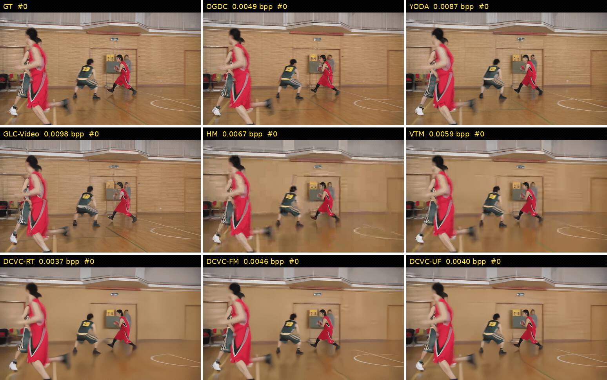

OGDC preview
BasketballDrive, first 25 frames. Ground truth, OGDC, YODA, GLC-Video, HM, and VTM are on the top two rows. DCVC-RT, DCVC-FM, and DCVC-UF are on the bottom row. The number on each panel is the rate of the full 96-frame sequence.
